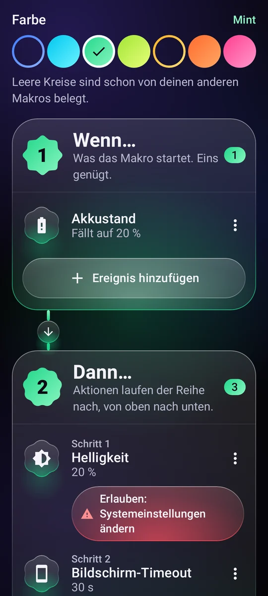
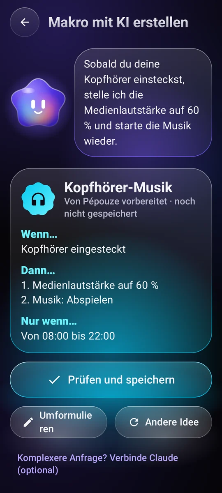
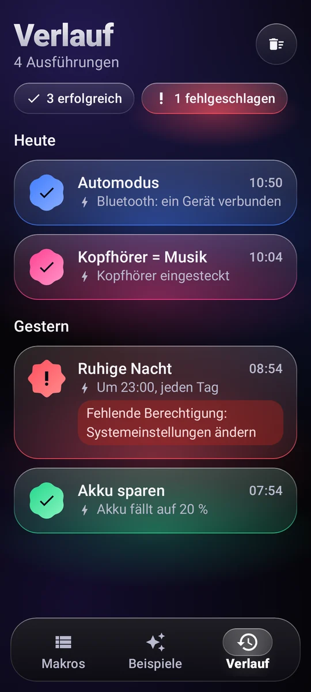

Was das Makro startet
Uhrzeit und Wochentage, WLAN, Bluetooth, Kopfhörer, Ladegerät, Akkustand, der Bildschirm geht an, eine App wird geöffnet…
11 AuslöserAutomatisierung für Android
Schreib eine einfache Regel, „Wenn… Dann…“, und dein Handy erledigt den Rest – ganz von allein, genau im richtigen Moment.
So funktioniert's
Jedes Makro passt in einen Satz. Du baust es aus drei Blöcken – ganz ohne Programmieren.
Uhrzeit und Wochentage, WLAN, Bluetooth, Kopfhörer, Ladegerät, Akkustand, der Bildschirm geht an, eine App wird geöffnet…
11 AuslöserLautstärke, Klingelton, Bitte nicht stören, Helligkeit, Taschenlampe, Musik, Wecker, Timer, Benachrichtigung, Text vorlesen, App oder Link öffnen, Text auf dem Bildschirm antippen…
29 kombinierbare AktionenEin Zeitfenster, Wochentage, ein Akkustand, das Handy lädt.

Beispiele
Beispiel kopieren, anpassen, fertig. Hier ein paar davon.
Sobald sich das Bluetooth im Auto verbindet, wird es lauter und die Musik läuft weiter.
Um 23 Uhr geht Bitte nicht stören an, die Helligkeit sinkt aufs Minimum und die Musik stoppt.
Unter 20 % Akku wird der Bildschirm dunkler und geht schneller aus.
Wenn du deine Kopfhörer einsteckst, startet die Wiedergabe in angenehmer Lautstärke.
Morgens, wenn du das Ladegerät abziehst, sagt dir dein Handy die Uhrzeit und den Akkustand an.
Sonntag bis Donnerstag um 22:30 Uhr erinnert dich ein sanfter Hinweis, das Handy wegzulegen, und der Bildschirm wird dunkler.

Pépouze, deine Assistentin
Beschreib in einem Satz, was du willst. Pépouze bereitet das Makro vor, du prüfst es und speicherst es dann.
Du„Wenn ich meine Kopfhörer einstecke, spiel Musik mit 60 %“
Teilen und starten
Tausch Ideen mit der Community aus und starte deine Makros, ohne die App überhaupt zu öffnen.
Eine Bibliothek mit Makros, die Nutzer teilen. Kopier das, das dir gefällt, und veröffentliche deine eigenen. Zur Community
Zeig ihn einem Freund, pack ihn in ein Video: Jede Kamera öffnet ihn, und Pépouze importiert ihn.
Ein Widget auf dem Startbildschirm, eine Kachel in den Schnelleinstellungen oder eine Verknüpfung: Das Makro startet sofort.
Pépouze spricht 13 Sprachen und versteht deine Anfragen direkt auf dem Handy.
Du behältst die Kontrolle
Jede Ausführung wird festgehalten, ob erfolgreich oder nicht, samt dem, was sie ausgelöst hat.
Eine Berechtigung wird erst angefragt, wenn ein Makro sie braucht – mit Erklärung.
In Google Drive oder auf dem Handy, ohne Konto. Oder online, mit Konto.
Deine Makros liegen auf deinem Handy. Keine Reichweitenmessung, keine verkauften Daten.

Preis
Während der Startphase ist Pépouze komplett kostenlos und werbefrei. Danach kommt eine kostenpflichtige Version: Du wirst vorher informiert, und deine Makros bleiben deine.
0 €
Fragen
Nur für das, was du selbst in deine Makros einbaust: einen Text auf dem Bildschirm antippen, Zurück oder Startbildschirm drücken, den Bildschirm sperren, einen Screenshot machen, erkennen, welche App geöffnet wird.
Der Bildschirmtext wird nur gelesen, um den anzutippenden Text zu finden, und nichts verlässt das Handy. Pépouze handelt ausschließlich nach den Regeln, die du geschrieben hast. Der Dienst wird nur mit deiner Zustimmung aktiviert, nach einer eigenen Erklärung, und du kannst ihn jederzeit ausschalten.
Nein. Das Konto dient nur dazu, deine Makros online zu sichern. Du kannst sie auch in einer Datei sichern, in Google Drive oder auf dem Handy – ganz ohne Konto.
Ja, die meisten: Pépouze wartet im Hintergrund auf Ereignisse. Damit Android die App nicht schlafen legt, wähle auf der App-Seite in den Android-Einstellungen „Akku: Nicht eingeschränkt“. Aktionen, die den Bildschirm antippen, brauchen ein entsperrtes Handy.
Nein. Die Aktion „SMS vorbereiten“ öffnet deine Nachrichten-App mit fertiger Nummer und fertigem Text: Auf Senden tippst du selbst.
In der App: Mein Konto → Mein Konto löschen. Ohne die App folgst du der Seite zur Kontolöschung.
Kostenlos während der Startphase, für Android.
Pépouze kommt bald. Teste es vor allen anderen: Schreib uns, und wir schicken dir die Einladung.